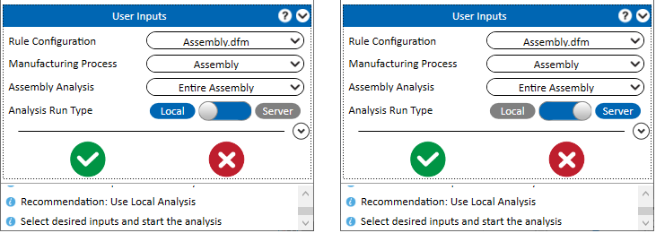
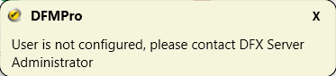
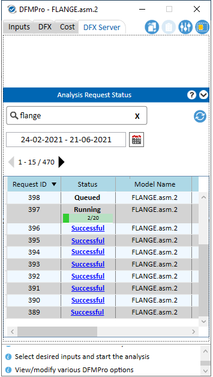
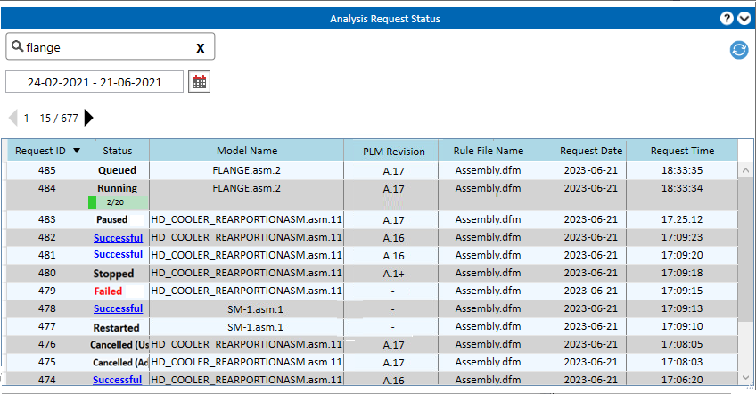
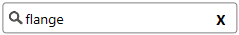
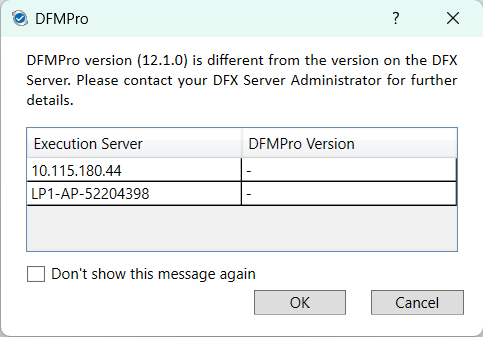
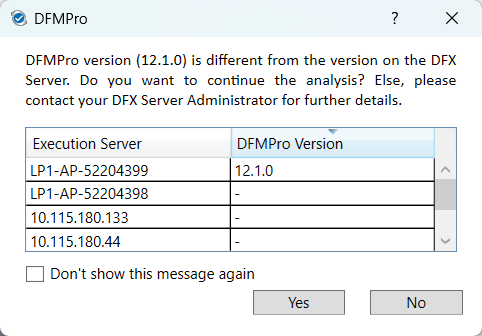

解析 ボタンをクリックすると、DFMPro は DFX 実行サーバーのバージョンを確認し、解析リクエストを送信する前にメッセージで通知します。
解析 ボタンをクリックすると、DFMPro は DFX 実行サーバーのバージョンを確認し、解析リクエストを送信する前にメッセージで通知します。DFX サーバーソリューションは、DFX サーバー上で解析を実行するためのオプションを提供します。この機能は DFMPro 設定 から有効にできます。
これにより、ユーザーは以下のことが可能になります：
ローカルシステムのリソースを解放し、高性能なサーバーマシンを使用して解析を実行する。
サーバー上で解析を実行した後に、DFMPro および Creo Parametric のセッションを終了する。
DFMPro for Creo Parametric の「DFX サーバー」タブから解析ステータスを確認する。
サーバー上で解析が正常に完了した後、（ローカルで解析した場合と同様に）DFMPro for Creo Parametric 内で結果を確認する。
注記：
DFX サーバーソリューションは、現在以下のモジュールをサポートしています：
DFX サーバー設定を有効にするには、DFMPro 管理者にお問い合わせください。
DFX サーバー機能を使用するには、DFMPro 設定ファイルをバージョン 8.11 から アップグレード してください。
アセンブリモジュールによるマルチプロセス解析 は、DFX サーバーでサポートされています。
アセンブリ が 製造プロセス として選択され、かつ サーバー解析を許可 オプションが DFMPro 設定 ダイアログボックスで有効になっている場合、DFMPro は解析実行タイプとして サーバー および ローカル のオプションを表示します。
DFMPro for Creo Parametric のインストール
DFX サーバーのセットアップ
バッチ機能を備えた DFMPro for Creo Parametric のライセンス

ローカル オプションが選択されている場合、解析はローカルマシンで実行されます。
サーバー オプションが選択されている場合、解析は DFX サーバー上で実行されます。
注記：
サーバー実行は DFMPro のルール解析のみがサポートされています。コスト見積りは現在 DFX サーバーではサポートされていません。
解析リクエストを DFX サーバーで実行するには、各ユーザーまたはユーザーグループに有効なメール ID が設定されている必要があります。ユーザーまたはグループのメール ID は、DFX サーバー管理ダッシュボードで管理者のみが設定できます。ユーザー名が DFX サーバー管理ダッシュボードに設定されていない場合、DFMPro は以下の警告メッセージを表示します。詳細については、DFX サーバー管理者ユーザーガイドを参照してください。
DFX サーバー解析機能のユーザー／グループ選択は、DFMPro for Creo Parametric v12.1 から DFX サーバー管理ダッシュボードで利用可能です。

選択されたコンポーネント数および適用可能なルールに基づくヒューリスティックにより、アプリケーションは解析をサーバーで実行すべきかどうかを推奨します。ユーザーはこの推奨を上書きすることができます。
ユーザーは DFX サーバータブから送信済みリクエストのステータスを確認できます。

このグループボックスでは、サーバーでの実行のためにユーザーが送信したすべてのリクエストのステータスを確認できます。以下の情報が表示されます：

リクエスト ID： 解析のために送信されたリクエストを識別する固有の番号。
ステータス： 各解析実行について、以下のいずれかのステータスが表示されます：
モデル名： 解析リクエストが送信されたアセンブリの名前。
PLM リビジョン： 解析リクエストに対応する PLM の特定リビジョン番号。
ルールファイル名： 解析に使用されたルールファイルの名前。
リクエスト日： 実行のためにリクエストが送信され、サーバーに送られた日付。
リクエスト時刻： リクエストが送信された時刻。
ユーザーは解析実行ステータスを通知するメールを受信します。通知メールの設定は DFX サーバー管理ダッシュボードで管理者のみが行えます。詳細については、DFX サーバー管理者ユーザーガイドを参照してください。
注記：
通知メール機能は DFMPro for Creo Parametric バージョン 9.4 から利用可能です。
解析リクエストが Queued または Running 状態の場合、DFX サーバー管理者のみが解析リクエストをキャンセルできます。Queued／Running ステータスを右クリックし、コンテキストメニューから キャンセル オプションを選択して解析リクエストをキャンセルします。キャンセル後、ステータスは Cancelled に変更され、同じステータスが DFX サーバー管理ダッシュボードにも反映されます。
カレンダーから日付範囲を設定して、該当する送信済みリクエストの解析ステータスを表示します。
モデル名、リクエスト ID、ルールファイル名などの入力を指定して、該当する解析結果を表示します。

ステータス更新 ボタンを使用して、送信済みのすべての解析リクエストの解析ステータスを更新します。
結果は、サーバー上の送信済みリクエストに対して DFX サーバータブからインポートできます。特定のリクエストの Successful ステータスをクリックすると、その実行に対する dfmr ファイルがインポートされます。
必要に応じて、インポート処理をキャンセルすることもできます。
注記：
正常にインポートするには、結果生成に使用されたものと同じアセンブリを開いている必要があります。
解析 ボタンをクリックすると、DFMPro は DFX 実行サーバーのバージョンを確認し、解析リクエストを送信する前にメッセージで通知します。
クライアントが DFX サーバーにリクエストを送信すると、サーバーはクライアント側の DFMPro バージョンと実行サーバー上のバージョンを比較します。不一致が検出された場合、設計者に通知ポップアップメッセージが表示されます。
解析を行うには、DFMPro と DFX 実行サーバーが同一マシン上で利用可能である必要があります。DFX 実行サーバーに DFMPro がインストールされていない、または接続されていない場合、DFMPro は利用可能な DFX サーバーの一覧を含むメッセージを表示します。OK／キャンセル をクリックしてメッセージを閉じてください。
詳細については、DFX サーバー管理者にお問い合わせください。

クライアント側の DFMPro バージョンと DFX 実行サーバー側のバージョンが異なる場合、DFMPro は以下のメッセージを表示し、現在のバージョンを持つ利用可能な実行サーバーの一覧を提供します。
はい をクリックすると、解析を続行します。
いいえ をクリックすると、処理を停止します。
詳細については、DFX サーバー管理者にお問い合わせください。
